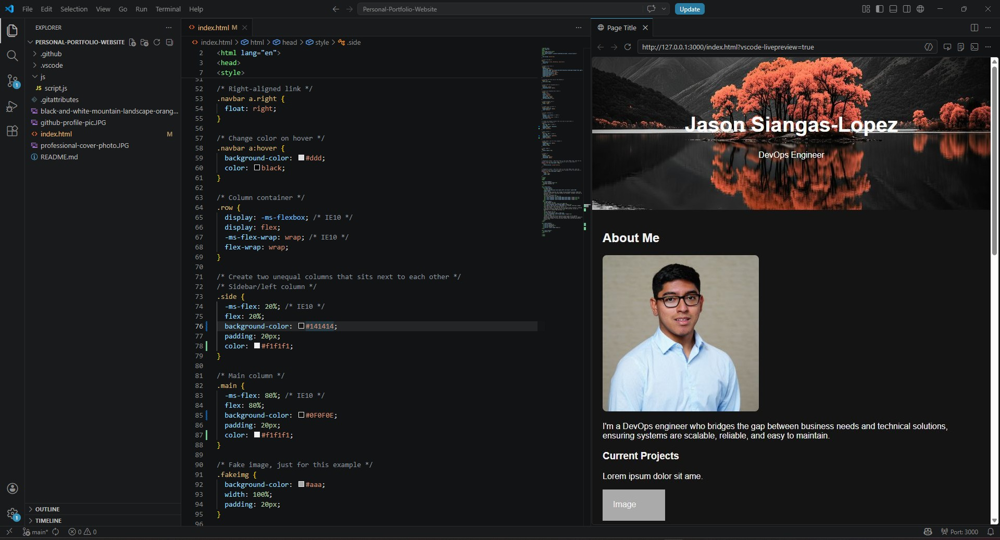

BIG PROJECT #1
A Personal Portfolio, April 29, 2026

A website that serves as a supplement to a resume, offering a deeper look into projects and technical skills.
In this entry, I will go over one of my first major projects: creating a personal portfolio website using custom HTML and CSS, as well as deploying it on Amazon Web Services.